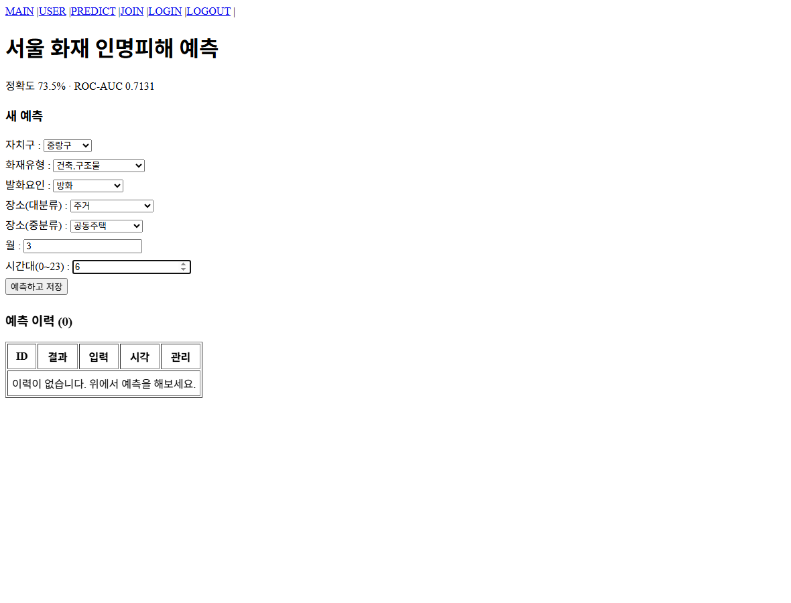
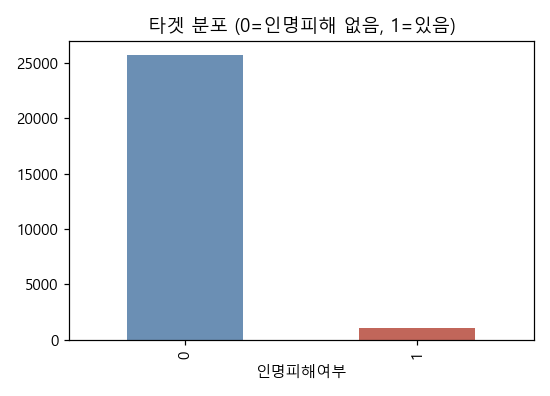
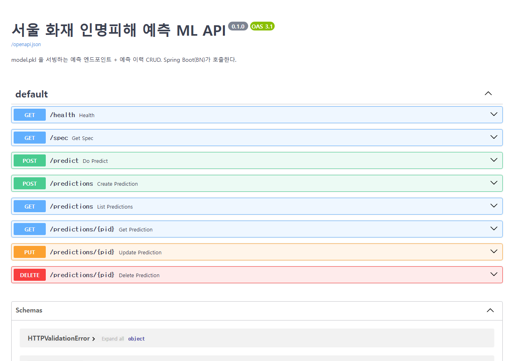
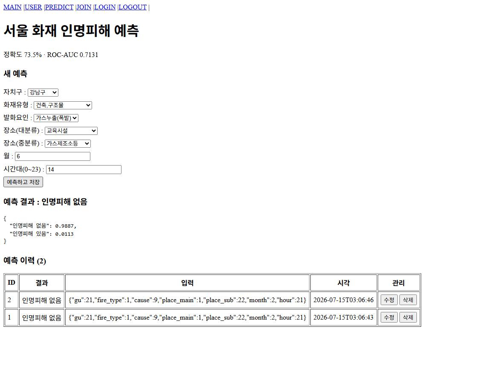
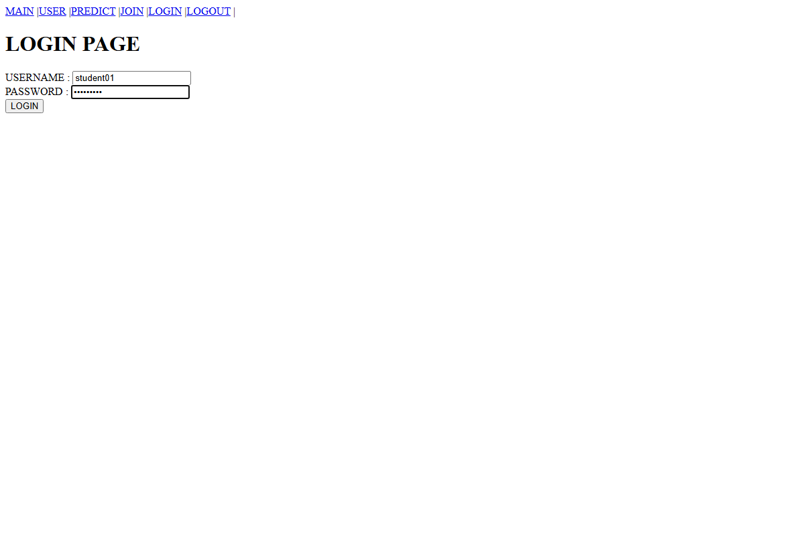

공공데이터 융합 DBMS 구축 — 준비 교안
교과목 공공데이터 융합 DBMS 구축 / 7수준 · 평가방법 문제해결시나리오 (100점)
0. 제출물의 구성과 배점
제출물은 폴더 세 개와 그것을 정리한 발표 자료입니다. 배점을 시간 배분의 기준으로 삼습니다.
| 폴더 | 만들어야 할 것 | 산출물 | 배점 |
|---|---|---|---|
| 01 | 모델 학습 — 데이터 확보부터 학습과 저장까지 | 모델학습 노트북 · model.pkl · feature_spec.json | 44 |
| 02 | ML API — 모델을 주소로 감싸고 이력을 저장 | API 코드 · 컨테이너 정의 | 28 |
| 03 | 풀스택 통합 — 화면과 서버에 연결하고 인증 적용 | 중계 코드 · 예측 화면 | 28 |
| 합계 | 100 | ||
평가는 능력단위가 끝나는 날 하루에 몰아서 봅니다. 그날 8시간 안에 위의 것을 모두 보여야 하므로, 미루지 말고 차시마다 마무리해야 합니다.
1. 예측 서비스의 구조
만들 것은 예측 모델 하나가 아니라 모델을 품은 서비스입니다. 조각이 넷이고, 각자 맡은 일이 다릅니다.
| 조각 | 맡은 일 | 왜 나누는가 |
|---|---|---|
| 화면 | 사람이 값을 넣고 결과를 봅니다 | 입력칸을 스스로 만들지 않고 입력 정의서를 읽어 그립니다 |
| 서버 | 로그인을 확인하고 요청을 넘깁니다 | 예측을 직접 하지 않으므로 모델이 바뀌어도 고칠 것이 없습니다 |
| ML | 모델을 불러 답을 냅니다 | 모델을 다루는 일을 한곳에 모아 둡니다 |
| 모델 파일 | 학습 결과를 담고 있습니다 | 서비스할 때마다 다시 학습하지 않습니다 |
그리고 곁에 데이터베이스와 캐시가 붙습니다. 예측 이력이 데이터베이스에 쌓이고, 캐시는 로그인 상태를 들고 있습니다. 모두 합쳐 컨테이너 다섯 개입니다.
이 구조를 먼저 머릿속에 넣어 두면, 뒤에서 어느 파일을 왜 고치는지가 보입니다.
2. 산출물 작성 실습
열다섯 단원입니다. 레벨 2가 채점 30점, 레벨 3이 70점에 대응합니다. 각 단원의 왼쪽 방주에 그 단원이 어느 채점 항목을 채우는지 적어 두었습니다.
1완성 예시의 확인
무엇을 만드는가
공공데이터로 예측 모델을 만들고, 그 모델을 웹 서비스로 올리는 것이 이 교과의 과제입니다. 완성되면 브라우저에서 회원가입과 로그인을 하고, 입력 폼에 값을 넣어 예측한 결과가 화면에 나오며, 그 결과가 목록에 쌓여 수정하거나 지울 수 있습니다.
먼저 완성 예시를 눈으로 익힙니다. 무엇을 만드는지 모르는 채로 코드를 따라 치면 지금 무엇을 하는지 알기 어려워집니다.

화면 아래쪽에 예측 이력이 표로 쌓입니다. 새로 고쳐도 사라지지 않습니다. 데이터베이스에 저장되기 때문입니다.

세 폴더로 나누어 만듭니다
| 폴더 | 하는 일 | 만들 것 |
|---|---|---|
| 01 | 모델 학습 | 주피터 노트북으로 데이터를 다듬고 모델을 학습시켜 model.pkl 과 feature_spec.json 을 만듭니다 |
| 02 | ML API | 저장한 모델을 불러 예측 결과를 돌려주는 API 와 예측 이력 저장소를 만듭니다 |
| 03 | 풀스택 통합 | 제공된 템플릿에 ML 을 연결해 화면에서 로그인하고 예측할 수 있게 만듭니다 |
데이터가 흐르는 길
브라우저에서 누른 값이 서버를 거쳐 ML 로 가고, ML 이 모델 파일을 열어 답을 냅니다. 답은 온 길을 되짚어 화면으로 돌아옵니다.
화면 → 서버 → ML → 모델 파일 → ML → 서버 → 화면
서버는 예측을 직접 하지 않고 중계만 합니다. 모델을 바꾸어도 서버 코드는 그대로입니다.
2실습 환경의 준비
갖추어야 할 것
| 항목 | 확인 |
|---|---|
| Python 3.11 | 주피터 노트북을 함께 씁니다 |
| Docker Desktop | 설치 후 재시작이 필요합니다. 기동된 상태로 두십시오 |
| 공공데이터포털 계정 | data.go.kr 회원가입. 인증키 발급에 시간이 걸립니다 |
| GitHub 계정 | 산출물을 저장소 링크로 제출합니다 |
| 풀스택 템플릿 | 03 단계에서 씁니다. 미리 내려받아 두시기 바랍니다 |
먼저 확인할 것
Docker Desktop 이 켜져 있지 않으면 03 단계에서 아무것도 되지 않습니다. 설치만 하고 실행하지 않는 경우가 가장 흔합니다.
포털 인증키는 신청 후 승인까지 시간이 걸립니다. 첫날에 신청해 두십시오. CSV 를 내려받는 데에는 인증키가 필요 없지만, 나중에 쓸 일이 생깁니다.
답이 돌아오지 않으면 그 자리에서 강사에게 알립니다. 뒤로 미루면 실습 시간을 잃습니다.
3데이터 선정
고를 수 있는 데이터의 조건
조별로 서로 다른 데이터를 직접 고릅니다. 수업에서 보여 드리는 예시 데이터는 쓸 수 없습니다. 고르기 전에 세 가지를 확인합니다.
| 조건 | 뜻 |
|---|---|
| 행 단위 | 한 줄이 한 사건이어야 합니다. 이미 합계로 묶인 집계 데이터는 학습할 수 없습니다 |
| 이진 타겟 | 답이 둘 중 하나여야 합니다. 적합과 부적합처럼 이미 있으면 좋고, 없으면 연속값을 중앙값으로 갈라 만들어도 됩니다 |
| 공공데이터포털 | data.go.kr 에서 받은 CSV 여야 합니다. 데이터셋 식별번호를 적어 둡니다 |
고르면 안 되는 데이터
다음에 해당하면 뒤에서 막힙니다. 검색 단계에서 걸러 냅니다.
- 결과 컬럼이 없는 경우입니다. 접수나 신고 현황처럼 무슨 일이 있었는지만 적힌 데이터가 그렇습니다.
- 답이 1인 행이 지나치게 적은 경우입니다. 몇 건뿐이면 학습도 검증도 되지 않습니다.
- 파일이 지나치게 큰 경우입니다. 수십 MB 에 100열이 넘으면 실습 시간 안에 다루기 어렵습니다.
- 행이 수십 개뿐인 경우입니다. 지자체 단위 데이터에 흔합니다.
승인을 받아야 다음으로 넘어갑니다. 승인되지 않으면 다시 골라야 하므로 후보를 넉넉히 확보해 둡니다.
4데이터 확보와 출처 확인
무엇을 적어야 하는가
데이터를 내려받은 것으로 끝나지 않습니다. 어디에서 온 데이터인지를 밝혀야 합니다. 채점표 첫 항목이 이것을 봅니다.
| 항목 | 어디에서 확인하는가 |
|---|---|
| 출처 | 공공데이터포털의 데이터셋 주소와 식별번호 |
| 제공기관 | 데이터셋 상세 화면의 제공기관 항목 |
| 건수 | 내려받은 CSV 의 행 수. 전체 가운데 일부만 쓴다면 그 수도 함께 |
| 갱신주기 | 상세 화면의 갱신주기 항목 |
| 이용허락범위 | 상세 화면의 이용허락범위 항목 |
선정 이유를 함께 씁니다
왜 이 데이터를 골랐는지 한두 문장으로 적습니다. 분석 목적과 데이터가 어떻게 맞는지를 씁니다.
형식적으로 한 줄 적으면 보통 이하로 내려갑니다. 목적과 데이터를 이어 붙여 씁니다.
5구조 · 유형 · 척도 파악
먼저 열어 봅니다
공공데이터 CSV 는 대개 cp949 로 저장되어 있습니다. 인코딩을 지정하지 않고 열면 한글이 깨지므로, 적재할 때 cp949 를 지정합니다.
적재한 뒤에는 세 가지를 확인합니다. 행과 열이 몇 개인지, 각 컬럼의 자료형이 무엇인지, 비어 있는 칸이 얼마나 되는지입니다.
척도를 구분합니다
자료형은 컴퓨터가 보는 형태이고, 척도는 그 값이 무엇을 뜻하는지입니다. 둘은 다릅니다. 숫자로 저장되어 있어도 명목척도인 경우가 있습니다.
| 척도 | 뜻 | 예 |
|---|---|---|
| 명목 | 순서가 없는 이름 | 자치구 · 화재유형 · 발화요인 |
| 순서 | 차례는 있으나 간격은 모름 | 등급 · 만족도 |
| 등간 | 간격은 같으나 0 이 없음을 뜻하지 않음 | 온도 · 연도 |
| 비율 | 0 이 없음을 뜻함 | 건수 · 금액 · 면적 |
우편번호나 코드처럼 숫자로 적힌 명목척도를 그대로 수치로 넣으면 모델이 크기를 비교해 버립니다. 이 구분이 뒤의 인코딩으로 이어집니다.
분석 가능 여부를 판단합니다
컬럼 목록을 정리하고 나면 판단할 수 있습니다. 타겟으로 삼을 컬럼이 있는지, 쓸 만한 설명 변수가 대여섯 개는 되는지, 한 컬럼에 값이 지나치게 많지는 않은지를 봅니다.
6품질 진단과 인사이트 도출
품질을 수치로 적습니다
「결측치가 좀 있습니다」 는 진단이 아닙니다. 몇 건이고 몇 퍼센트인지를 적어야 진단입니다.
| 볼 것 | 적을 것 |
|---|---|
| 결측치 | 컬럼별 빈 칸의 건수와 비율 |
| 표기 불일치 | 같은 뜻인데 다르게 적힌 값. 띄어쓰기나 표기 차이 |
| 희소 범주 | 몇 건뿐인 값. 범주 개수와 함께 적습니다 |
| 이상치 | 범위를 크게 벗어난 값 |
진단만 하고 끝내지 않습니다. 각 항목을 어떻게 처리할지 정제 방향을 함께 적습니다.
타겟 분포를 확인합니다

불균형이면 정확도만 보아서는 안 됩니다. 전부 0 이라고 찍어도 정확도가 높게 나오기 때문입니다. 이 점이 8단원의 지표 선택으로 이어집니다.
인사이트를 도출합니다
데이터가 무엇을 말하는지를 수치로 꺼냅니다. 범주별로 답이 1인 비율을 집계하면 어떤 조건이 위험한지가 드러납니다.
여기서 적은 세 문장을 13단원에서 다시 꺼내 씁니다. 모델이 낸 예측이 이 인사이트와 맞는지 대조하는 것이 결과 해석입니다.
7타겟 정의와 누수 배제
타겟을 정의합니다
맞히려는 값을 0 과 1 로 만듭니다. 기준을 세우고 그 근거를 함께 적습니다.
데이터에 이미 적합과 부적합처럼 두 값이 있으면 그대로 씁니다. 없으면 만들어야 합니다. 인명피해 수가 1명 이상이면 1로 두는 식입니다. 연속값이라면 중앙값으로 갈라 큰 쪽을 1로 두어도 됩니다.
기준을 적지 않으면 채점에서 근거 없음으로 봅니다. 「1명 이상」 인지 「2명 이상」 인지가 왜 그래야 하는지를 한 문장으로 씁니다.
데이터 누수를 걷어냅니다
답이 들어 있는 컬럼이 설명 변수에 섞이면, 모델이 문제를 푸는 것이 아니라 답을 베끼게 됩니다. 이것을 데이터 누수라고 합니다.
| 걷어낼 컬럼 | 이유 |
|---|---|
| 타겟을 구성하는 컬럼 | 인명피해 여부를 맞히는데 사망자 수가 들어 있으면 답이 그대로 보입니다 |
| 사후 결과값 | 사건이 끝난 뒤에 확정되는 값입니다. 재산피해액이 그렇습니다 |
| 식별자 | 일련번호처럼 뜻이 없는 값입니다 |
성능이 지나치게 높으면 누수를 의심하십시오. ROC-AUC 가 0.99 처럼 나오면 대개 답이 새어 든 것입니다. 그대로 두면 뒤의 모든 결과가 무효가 됩니다.
남길 변수를 정합니다
걷어내고 남은 것 가운데 쓸 변수를 고릅니다. 다섯에서 열 개면 충분합니다. 컬럼명은 영문으로 바꾸어 둡니다. 이 이름이 그대로 API 의 항목 이름이 되고, 한글 이름은 뒤에서 인코딩 문제를 일으킵니다.
고른 이유를 컬럼마다 한 줄씩 적어 두면 채점표 ① 05 항목이 채워집니다.
8정제 · 가공과 모델 학습
정제하고 가공합니다
6단원에서 세운 정제 방향을 실행합니다. 결측치를 채우거나 지우고, 몇 건뿐인 희소 범주는 기타로 묶고, 필요하면 파생변수를 만듭니다.
범주형 컬럼은 숫자로 바꾸어야 학습할 수 있습니다. 이것이 인코딩입니다. 5단원에서 구분한 척도가 여기서 쓰입니다. 명목척도는 순서가 없으므로 크기를 만들지 않는 방식으로 바꿉니다.
학습과 검증으로 나눕니다
학습에 쓴 데이터로 성능을 재면 답을 보고 채점하는 것과 같습니다. 8 대 2 로 나누어 2 를 남겨 두고, 남긴 쪽으로만 성능을 잽니다.
나눌 때 클래스 비율을 유지해야 합니다. 불균형 데이터를 아무렇게나 나누면 검증 쪽에 답이 1인 행이 거의 없게 될 수 있습니다. 층화 추출을 지정합니다.
학습시킵니다
랜덤포레스트로 시작합니다. 범주형이 많은 공공데이터에 잘 맞고 설정이 간단합니다.
불균형이라면 적은 쪽에 가중치를 싣는 설정을 켭니다. 켜지 않으면 모델이 많은 쪽으로만 답합니다.
성능을 재고 해석합니다
네 가지를 함께 출력합니다. 정확도, ROC-AUC, Precision, Recall 입니다. 그리고 어느 것을 주지표로 삼았는지와 그 이유를 적습니다.

여기서 나온 변수 중요도를 6단원의 인사이트와 대조해 보십시오. 손으로 찾은 위험 조건이 모델에서도 위쪽에 있으면 진단이 옳았던 것입니다.
9모델과 입력 정의서 저장
두 파일을 남깁니다
학습을 마쳤으면 결과를 파일로 남깁니다. 두 개입니다.
| 파일 | 담는 것 |
|---|---|
| model.pkl | 학습을 마친 모델 자체입니다. 다시 학습하지 않고 불러 씁니다 |
| feature_spec.json | 입력칸의 설계도입니다. 항목 이름 · 표시할 이름 · 종류 · 선택지를 담습니다 |
두 파일은 02 폴더에 둡니다. 다음 단원에서 API 가 이 파일을 엽니다.
입력 정의서가 하는 일
이 파일 하나가 두 곳을 자동으로 만듭니다. API 의 문서 화면과, 03 단원의 입력 폼입니다. 입력칸을 손으로 만들지 않는 이유가 여기에 있습니다.
정의서를 고치면 화면이 따라 바뀝니다. 바뀌지 않는다면 화면에 값을 박아 넣은 것이고, 그러면 감점됩니다.
버전을 맞춥니다
모델을 학습한 환경과 서비스하는 환경의 라이브러리 버전이 다르면 파일이 열리지 않습니다. 학습에 쓴 버전을 그대로 적어 둡니다.
버전이 어긋나면 02 단원에서 모델을 여는 순간 오류가 납니다. 원인을 찾기 어려운 축에 들어가니 지금 맞춰 두는 편이 낫습니다.
10ML API 구현
왜 API 로 만드는가
노트북 안에서만 돌면 다른 프로그램이 쓸 수 없습니다. 모델을 주소로 감싸 두면 화면이든 서버든 누구나 불러 쓸 수 있습니다.
모델은 서비스를 시작할 때 한 번만 불러옵니다. 요청마다 파일을 열면 느려집니다.
만들 주소
| 주소 | 방식 | 하는 일 |
|---|---|---|
| /health | GET | 서비스가 살아 있는지 답합니다 |
| /spec | GET | 입력 정의서를 그대로 내려 줍니다. 화면이 이것을 읽습니다 |
| /predict | POST | 입력을 받아 라벨과 확률을 돌려줍니다 |
파일을 나눕니다
한 파일에 다 넣지 않습니다. 모델을 다루는 부분과 주소를 다루는 부분을 나누어 두면 뒤에서 고치기 쉽습니다.
- 모델 로드와 예측 함수는 따로 둡니다. 예측 로직이 한 곳에만 있어야 합니다.
- 이력 저장소도 따로 둡니다. 다음 단원에서 씁니다.
- 주소를 붙이는 파일에서 이 둘을 불러 씁니다.

오류를 처리합니다
없는 번호를 찾거나 형식이 틀린 요청이 오면 그에 맞는 응답을 돌려주어야 합니다. 처리하지 않으면 서비스가 그대로 멈춥니다.
채점에서 오류 처리를 봅니다. 없는 자원에 404 가 돌아오는지 확인하십시오.
11예측 이력 CRUD
예측을 남깁니다
예측만 하고 버리면 서비스가 아닙니다. 무엇을 넣어 무슨 답이 나왔는지를 남기고, 나중에 다시 보고 고치고 지울 수 있어야 합니다.
| 동작 | 주소 | 하는 일 |
|---|---|---|
| C | POST | 예측하고 그 결과를 저장합니다 |
| R | GET | 저장된 이력을 목록으로 봅니다 |
| U | PUT | 입력을 고치고 다시 예측해 결과를 갱신합니다 |
| D | DELETE | 이력을 지웁니다 |
수정이 재예측이어야 하는 이유
가장 자주 어긋나는 곳입니다. 수정은 값만 바꾸는 것이 아닙니다. 입력을 바꾸었으면 그 입력으로 다시 예측해 결과도 함께 바뀌어야 합니다.

다섯 가지가 모두 되면 채점표 ② 03 · 04 항목이 채워집니다.
12풀스택 통합과 인증
템플릿에서 만들 것
03 단계는 처음부터 만들지 않습니다. 화면과 서버, 데이터베이스, 캐시가 들어 있는 템플릿이 제공됩니다. 여러분이 만들 것은 ML 을 연결하는 부분 둘 뿐입니다.
| 이미 있는 것 | 만들 것 |
|---|---|
| 회원가입 · 로그인 | 서버의 예측 중계 부분 화면의 예측 페이지 |
| 데이터베이스 · 캐시 | |
| 화면 뼈대와 경로 | |
| 인증 설정 |
인증 코드는 고치지 마십시오. 템플릿의 인증 설정을 그대로 두는 것이 요건입니다. 고치면 감점됩니다.
컨테이너를 하나로 묶습니다
구성 파일에 ML 서비스를 더하고, 서버가 ML 을 찾을 수 있게 주소를 연결합니다. 그러면 명령 한 번으로 다섯이 함께 뜹니다.
데이터베이스 · 캐시 · ML · 서버 · 화면
서버는 중계만 합니다
서버가 예측을 직접 하지 않습니다. 받은 요청을 ML 로 넘기고 답을 그대로 돌려줍니다. 이 구조라면 모델을 바꾸어도 서버를 고치지 않아도 됩니다.
대신 서버를 거치므로 로그인한 사람만 예측할 수 있습니다. 인증이 걸린 경로 아래에 두는 것이 요건입니다.

화면은 정의서를 보고 그립니다
예측 화면은 입력칸을 스스로 만들지 않습니다. 9단원에서 만든 입력 정의서를 받아 와서 그 내용대로 폼을 그립니다.
항목이 여덟 개면 여덟 칸이 생기고, 선택지가 있으면 드롭다운이 됩니다. 정의서를 고치면 화면이 따라 바뀝니다.
입력칸을 코드에 박아 넣으면 채점표 ② 05 항목이 미흡으로 내려갑니다. 정의서를 한 항목 지워 보고 화면이 따라 줄어드는지로 확인하십시오.
13동작 검증과 결과 해석
순서대로 확인합니다
전부 기동한 뒤에 처음부터 끝까지 한 번 지나갑니다. 각 지점에서 화면을 캡처합니다. 이 캡처가 제출물이 됩니다.
| 순서 | 확인 | 캡처할 것 |
|---|---|---|
| 1 | 기동 | 컨테이너 다섯 개가 모두 떠 있는 상태 |
| 2 | 회원가입 · 로그인 | 로그인 화면과 로그인 후 화면 |
| 3 | 예측 폼 | 입력칸이 자동으로 그려진 화면 |
| 4 | 예측과 저장 | 결과와 확률, 그리고 아래 쌓인 이력 표 |
| 5 | 수정 | 입력을 바꾸어 결과가 달라진 화면 |
| 6 | 삭제 | 지운 뒤의 목록 |

결과를 해석합니다
여기가 마지막 채점 항목입니다. 화면이 도는 것만으로는 부족합니다. 나온 예측을 6단원에서 찾은 인사이트로 설명해야 합니다.
위험이 높게 나올 조건과 낮게 나올 조건을 각각 하나씩 넣어 보고, 예측 확률이 예상대로 갈리는지 확인합니다.
이 대조가 있으면 우수, 수치만 나열하면 보통입니다.
14자가 점검
강사가 보는 기준 그대로
아래는 실제 채점표입니다. 하나씩 확인하고 채워지지 않은 것을 메웁니다.
공공데이터 융합 기초 · 30점
- 포털에서 받은 행 단위 CSV 이고, 출처 · 제공기관 · 건수 · 이용허락범위를 적었습니까. (6점)
- 행과 열의 규모, 각 컬럼의 유형과 척도를 파악해 분석 가능 여부를 판단했습니까. (6점)
- 결측치 건수, 범주 개수, 표기 불일치, 희소 범주를 수치로 제시했습니까. (6점)
- 이진 타겟을 정의하고 그 기준을 근거와 함께 서술했습니까. (6점)
- 누수 컬럼을 식별해 제외하고, 남긴 변수의 선정 근거를 적었습니까. (6점)
공공데이터 융합 DBMS 구축 · 70점
- 정제 · 가공하고 클래스 분포를 지켜 8 대 2 로 나눈 뒤 학습시켰습니까. 네 지표를 출력하고 지표 선택의 근거를 적었습니까. (14점)
- 모델과 입력 정의서를 규격대로 저장했습니까. 학습 환경과 서비스 환경의 버전이 같습니까. (14점)
- 상태 확인 · 입력 정의 · 예측 세 주소가 동작하고 라벨과 확률을 돌려줍니까. 없는 자원에 오류가 돌아옵니까. (14점)
- 이력의 생성 · 조회 · 수정 · 삭제가 모두 되고, 수정 시 재예측됩니까. (14점)
- 다섯 컨테이너가 한 번에 뜨고, 로그인해야 예측되며, 입력 폼이 자동으로 그려집니까. (14점)
전부 켜지면 100점입니다. 합격선은 60점입니다. 켜지지 않는 항목이 있으면 그 단원으로 돌아갑니다.
15제출
세 가지를 냅니다
| 번호 | 제출물 | 담을 것 |
|---|---|---|
| ① | PPT | 실행화면 캡처를 포함합니다. 13단원의 여섯 지점을 순서대로 넣습니다 |
| ② | 소스 폴더 | 01 · 02 · 03 세 폴더를 그대로 냅니다 |
| ③ | 저장소 링크 | GitHub 주소. 공개 범위를 확인하고 냅니다 |
링크만 내지 마십시오. 권한이 바뀌거나 저장소를 지우면 평가할 것이 남지 않습니다. 캡처는 반드시 파일 안에 넣어 냅니다.
제출 전에 확인할 것
- 모델 파일과 입력 정의서가 02 폴더에 들어 있습니까.
- 설치 목록의 버전이 학습에 쓴 버전과 같습니까.
- 인증 관련 코드를 건드리지 않았습니까.
- 예시 데이터가 아니라 조에서 직접 고른 데이터입니까.
- 문제지에 적은 값이 가이드의 값이 아니라 본인 화면에 나온 값입니까.
3. 주요 감점 요인
| 항목 | 이런 경우 | 잃는 점수 |
|---|---|---|
| ① 01 | 출처와 이용허락범위를 적지 않은 경우. 가장 자주 나옵니다 | 6 |
| ① 03 | 품질 문제를 문장으로만 쓰고 수치를 적지 않은 경우 | 6 |
| ① 05 | 누수 컬럼이 독립변수에 남아 있는 경우. 성능이 지나치게 높으면 의심합니다 | 6 |
| ② 01 | 층화 분할 없이 나눈 경우. 지표 선택의 근거가 없는 경우 | 14 |
| ② 02 | 모델만 저장하고 입력 정의서가 없는 경우. 버전이 어긋난 경우 | 14 |
| ② 04 | 수정이 값만 덮어쓰고 재예측되지 않는 경우 | 14 |
| ② 05 | 입력칸을 코드에 박아 넣은 경우. 인증 없이 예측이 되는 경우 | 14 |